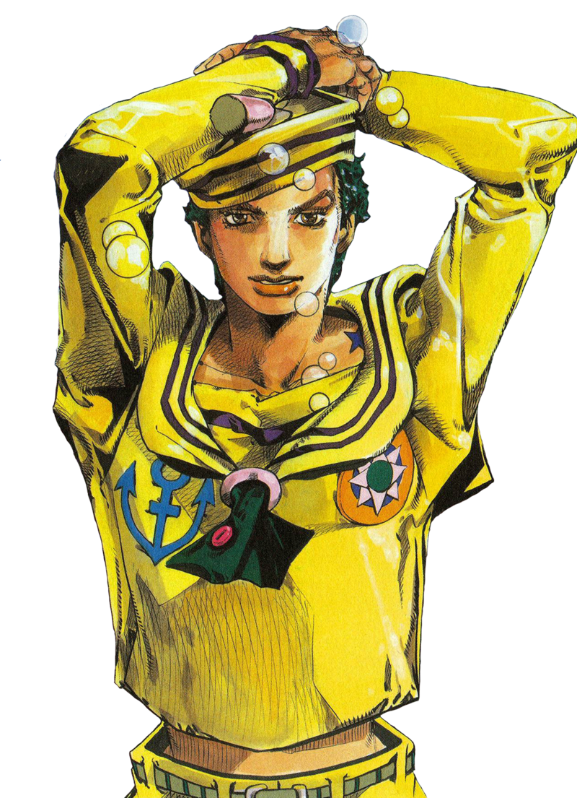
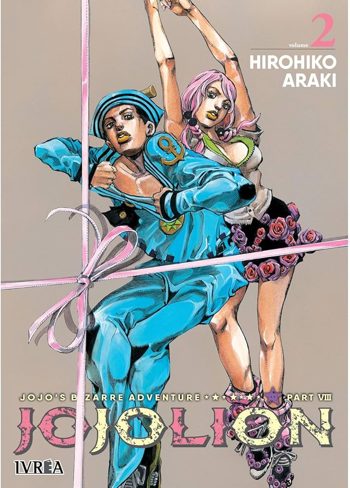
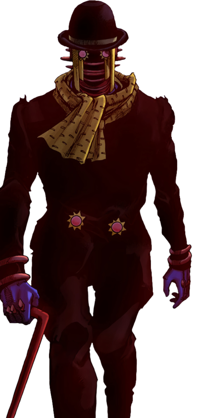

JoJolion is the eighth part of JoJo's Bizarre Adventure.It was serialized in Weekly Shonen Jump from 2011 to 2021. This part follows the adventures of amnesiac Josuke Higashikata, who tries to uncover his past and his missing memories in Morioh, a returning location from Part 4. The main conflict of the part stems from Josuke's unfunished buisiness from his past aswell as the problems that arrive to his new adoptive familly.After being found by Hirose Yasuho unconcious he uncovers slowly his past, first that he is apparently Yoshikage Kira. After the lead and many encounters the Josuke and his friends trace his past alongside the mysterious Locacaca Fruit and the Rock Humans.
It is revealed that due to the equivelant exchange ability of the Locacaca , Josuke is the combination of two people : Yoshikage Kira and Josefumi Kujo. As Josuke finds the truth about the Locacaca tree he defeats members of the Locacaca Organization and is told by his adopted family to retrieve the Locacaca fruit. This leads to Josuke finding and pursuing Toru the mastermind of the Locacaca organization and stand user of "Wonder of You". Eventually events lead to Toru's defeat by the power of the Locacaca with Wonder of You leaving his user and the story ends with Josuke being trully accepted into the Higashikata family.
The story begins with Yasuho Hirose hiding from Higashikata Joshu who ends up meeting an amnesiac Josuke Higashikata(who somehow has 4 testicles) and helps him unburry himself and calls an ambullence for him after he and Joshu end up unconcious due to Josuke's stand.Later in the hospital Josuke fully awakens his stand "Soft and Wet" and with the help Yasuho find out about his apparent identity of Yoshikage Kira,however she belives the name does not fit him and decides to name him Josuke.
Invastigating Kira Josuke and Yasuho meet their first enemy stand user however their missunderstanding is cleared and they find Kira's corpse,however his testicles are missing.After this Yasuho introduces Josuke to the head of the Higashikata family Norisuke Higashikata,a fruit importer, who welcomes Josuke to the family and informally adopts him giving him the Higasikata name.
Afterwards Josuke finds out about the steel ball run from a family book that allows him to trace Yoshikage Kira's mother Holy Joestar-Kira. With Yasuho's help he finds out she is a Doctor at the local TG Universary Hospital. On his way there he is stopped by Kei Nijimura who wants to protect Holy, her mother. As a token of goodwill Josuke promises not to meet with her, earning Kei's trust who helps him uncover that he is a fusion between two men Kira Yoshikage and another unkown man.However Kira's stand was Killer Queen making the second man who possessed Soft and Wet a mystery.Soon Josuke and his friends encounter many different Stand Users with clues regarding the main plot appearing. The characters find out that Johnny Joestar, protagonist of part 7, took the Holy Corpse with him into Japan and hid it under a tree where he would pray for his wife's desease to be cured.
However he soon discovered that the desease had been transfered to his son instead,thus Johnny desided to take the curse himself and later died.Josuke links this tail to the desease that Holy is suffering from.Meanwhile Yasuho is being targeted by Tsurugi Higashikata and her stand "Paper Moon King" and after a series of missadventures leads to Josuke and Yasuho to stard investigating a mysterious Fruit.Following the investigation of the fruit Josuke uncovers that the mysterious fruit allowed a man to recover an arm.
Continuing their investigation Josuke and Yasuho find out about the second man that composes Josuke called Josefumi Kujo.Later they find out about the existance of Rock Humans and their nature as prevalent stand users aswell as their curse should they fall in love with a human.Afterwards the Locacaca tree is introduced to the story as the source of the fruits that allow for the equivelant exchange phenomenon.Aftewards the tragedy of Kira and Josefumi is explained by Damo and Norisuke.Kira and Josefumi found out about the Locacaca and grafted a part of the tree into another but were found by Rock Humans who want to monopolise the Locacaca.During their altercation Kira got brutally injured and Josefumi used the power of the fruits to save him,leading to both of them being burried.
Aftewards Damo is killed by Josuke and the Josuke fully starts investigating the organization of the Rock Humans, the Locacaca Organization. During his search he finds out about Jobin Higashikata's involvment to the group and defeats many members of the organization.This leads them to heading to the hospital where they defeat more members of the Organization and figure out that the hospital's director,Satoru Akefu is also a member of the Organization.However calamity strikes as the gang try to chase after him encountering strange supernatural phenomena that deter them from chacing him,nearly costing them their lives.
Two weeks after with the help of Holy Josuke realises that he must bait Satoru into comming to them.With the help of Rei, Josuke confronts Satoru however he realises that Satoru is actually a stand that controlls the force of calamity called "Wonder of You".Chasing the stand and suffering through an endless ammount of events that conspire to stop them Josuke and Rei confront the stand in the Higashikata estate.There every party pursues their own interest,with Jobin dying from Wonder of You and Josuke realizing how to use Spin to defeat Wonder of You and nearly Kill it's owner Toru. The fight ends when the mother of the Higashikata family,Kaara kills Toru using the Locacaca fruit's power leading to the end of the Higashikata curse,however she dies in the proccess.In the epilogue of the part we find out that the Higashikata family has trully accepted Josuke as one of their own and have a bittersweet meal.



Comments